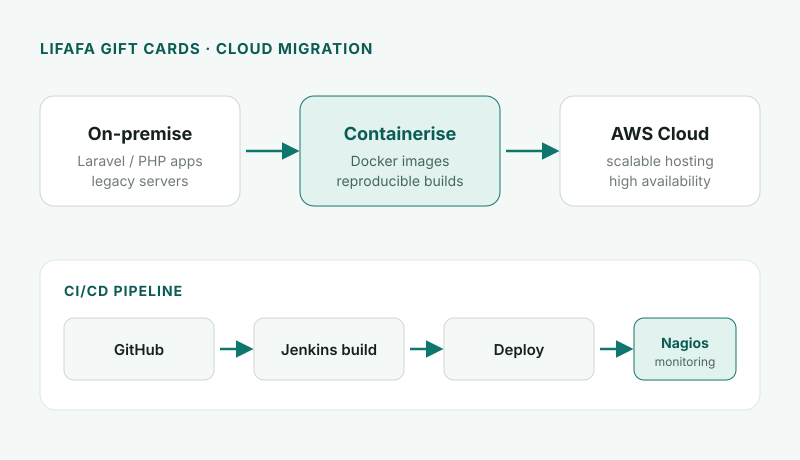
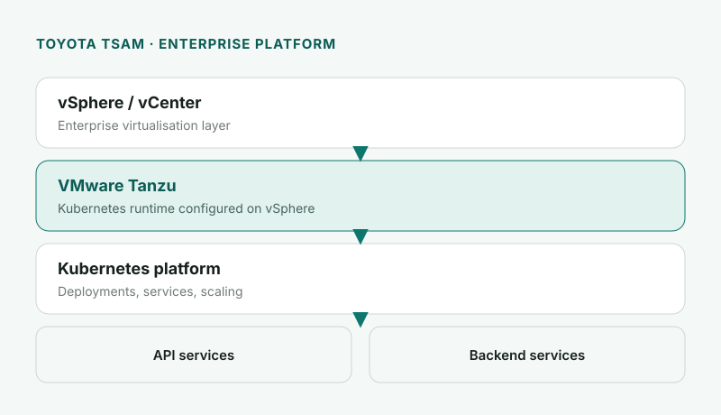
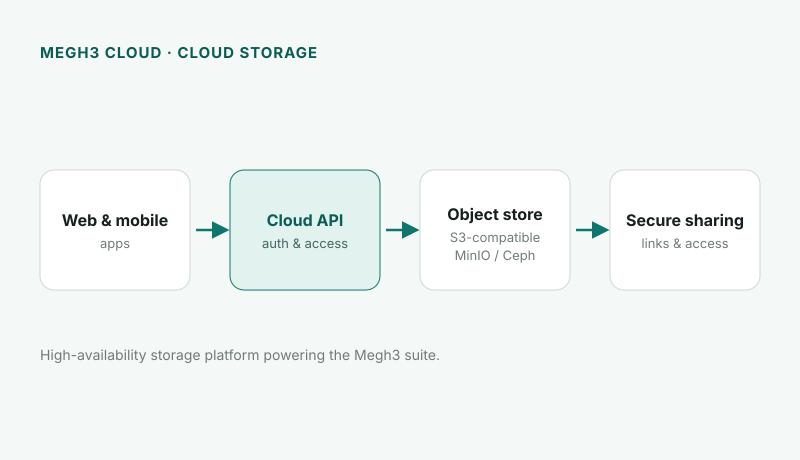
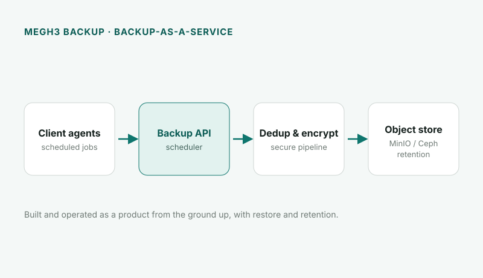
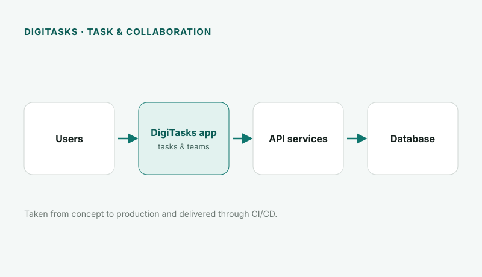

Family first
The people I love come before everything else. It keeps the rest in perspective.
Cloud & DevOps Architect
Pattabi Ram S. 14+ years building high-availability systems across AWS, Azure, and on-premise infrastructure.

About
I started out racking servers and answering support calls, and I never lost that operator's instinct. Over 14 years I grew into SRE and DevOps leadership, architecting, migrating, and running production platforms across AWS, Azure, DigitalOcean, and on-premise VMware.
The thread through all of it is reliability: CI/CD pipelines, containerised legacy applications, Kubernetes clusters, and monitoring that surfaces problems before users feel them, with cost, disaster recovery, and security treated as first-class concerns.
Away from the terminal I'm a calm, steady teammate who likes to mentor, keep learning, and leave things better than I found them. I believe good systems create freedom, for the business and for the people running them, and I try to bring that same discipline to how I live and work.
The people I love come before everything else. It keeps the rest in perspective.
I want the systems I build to matter, not just run. Impact over busywork.
New tools, certifications, and ideas keep me sharp and curious.
I mentor the people around me and help them level up. We rise together.
Steady energy and clear thinking start with looking after myself.
Small, consistent steps compound. Discipline beats intensity over time.
Discipline, consistency, progress. Good systems create freedom.
DigiBoxx Technologies & Digital India Pvt Ltd · Mumbai
Lead reliability for a three-tier platform, covering MinIO and Ceph object storage, Docker Swarm, a Harbor registry with Trivy scanning, Django CI/CD, SonarQube quality gates, and Terraform-driven disaster recovery with vendor post-mortems.
Products worked on
Lybl Healthcare India Pvt Ltd · Noida
Architected the next-generation continuous delivery platform. Deployed containerised applications on ECS and EKS Fargate for scalability and cost savings, built Kubernetes deployments, statefulsets, and network policies, and stood up Prometheus and Grafana monitoring.
Engro Technologies Pvt Ltd · Hyderabad
Streamlined DevOps practices and network design with an automation toolkit spanning Consul, Packer, Terraform, Chef, CloudInit, launch configs, and auto-scaling groups. Owned monitoring configuration, dashboards, and alerting across systems.
Neuralmetrics Pvt Ltd · Chennai
Oversaw the production environment, including monitoring, troubleshooting, change scheduling, and escalations. Reviewed solution architectures against functional, performance, and operational requirements and coordinated releases across teams.
Adcuratio Media India Pvt Ltd · Bengaluru
Built CI/CD with AWS CodeCommit, CodeBuild, and CodeDeploy alongside Jenkins, containerised deployments with Docker Swarm, migrated workloads to Kubernetes with secret management, and centralised logging via the ELK stack with Kibana dashboards.
Goomo Holdings Pvt Ltd · Bengaluru
Architected multi-cloud DevOps across AWS, Azure, Rackspace, and DigitalOcean. Migrated applications from DC/OS Mesos to Kubernetes, managed a fleet of 200+ AWS instances, automated builds and servers with Ansible, and set up Lambda-driven cost automation and Nagios monitoring.
Travel Centric Technology (HotelHub) · Bengaluru
Managed Windows Server, Active Directory, DHCP, DNS, and Group Policy, along with VMware via vCenter and Veeam backups. Introduced open-source tooling for helpdesk ticketing, systems inventory, and ESXi monitoring.
Logix Microsystems (Izmocars) · Bengaluru
Administered Windows and UNIX/Linux systems, supported US-based employees, monitored system logs for failures, and implemented content-based web filtering with Squid and an in-house mail server.

Led the initial setup and containerisation of the Lifafa website (PHP/Laravel), migrated on-premise applications to AWS, and containerised them with full CI/CD via Jenkins and GitHub, plus Nagios-based Docker monitoring and alerting.

Configured VMware Tanzu on vSphere and deployed API and backend services onto the Tanzu platform, providing a modern, Kubernetes-based runtime on enterprise infrastructure.

Contributed to the core cloud storage platform behind the Megh3 suite at DigiBoxx, with S3-compatible object storage on MinIO and Ceph and a focus on high availability.

Built and operated a cloud backup-as-a-service product from the ground up, covering scheduled client backups, a secure dedup-and-encrypt pipeline, retention, and restore.

Helped take a task and collaboration product from concept to production, with API services, a backing database, and CI/CD-driven delivery.
Field notes from building and securing production systems. Short, practical lessons I keep coming back to.
Order jobs by cost and failure rate, cap runtimes, and make the red build name what broke.
Read more → SecurityGrant nothing by default; scope roles from what the workload actually uses, not guesses.
Read more → IaCRemote, locked, versioned, encrypted state — and never hand-edited without a backup.
Read more → ReliabilityAlert the boring killers — full disks, expiring certs, bad deploys — and rehearse the rollback.
Read more → SecretsKeep secrets out of images and git; inject at runtime, scan before merge, rotate on schedule.
Read more → ObservabilityStructured logs, RED/USE metrics and a trace id — so you pivot from alert to root cause fast.
Read more → CostSize from real usage, switch off idle non-prod, and tag every resource to an owner.
Read more → KubernetesRequests, limits and probes on every pod — four fields that prevent a class of incidents.
Read more → DevSecOpsScan in the PR where fixes are cheap, and still enforce a hard policy at admission and runtime.
Read more → GitOpsMake git the single source of truth; deploy by merge and let the cluster self-heal drift.
Read more → Supply ChainShip images with an SBOM, a signature and verifiable build provenance.
Read more → Threat DetectionCatch shells-in-containers and odd syscalls at runtime with eBPF/Falco.
Read more → Zero TrustAuthenticate and encrypt every service call by workload identity, not network location.
Read more → LLM SecurityStop untrusted text from hijacking your LLM's tools or leaking data.
Read more → LLMOpsShip prompt and model changes behind evals, guardrails and cost budgets.
Read more → AIOpsTurn a flood of alerts into a few correlated, actionable incidents.
Read more →Contact
Have a platform to scale, a migration to de-risk, or reliability to improve? I'd be glad to hear about it.